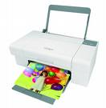

PAZU PRINT DEMO
本版本PAZU 只支持IE， 其他浏览器的支持版本请联系我公司技术部
打 印 机
纸张大小
页眉
页脚
方向
纵向
横向(需打印机支持)
页边距: 上 下
左
右
（单位mm）
是否缩放以适应大小打印
是否整份打印结束后再打印下一份
打印份数 页码范围(如:1-5或者1,3,5等，默认为打印全部页)
自定义纸张：宽mm 高mm
不预览立即打印
试试Print Template 技术(preview only)
指定只打印下面这个IFrame(不预览立即打印)
是否打印背景
这个DIV和"打印试试"按钮都不会被打印